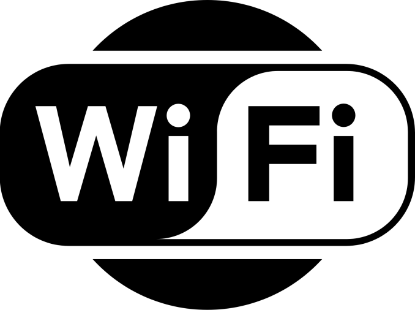

المنتجات القوية لا تبدأ بقائمة ميزات، بل بفهم دقيق لسلوك إنسان يواجه تحديًا واضحًا. الخطأ الأكثر شيوعًا هو القفز إلى الحل لأن تنفيذه ممتع، قبل التأكد من أن المشكلة مؤلمة ومتكررة بما يكفي.
ابدأ بالسياق، لا بالفكرة
تحدث مع المستخدمين في بيئتهم الطبيعية. اسألهم عن آخر مرة واجهوا فيها المشكلة، وما الذي فعلوه فعلًا، وكم كلفهم الحل الحالي. السلوك السابق أكثر صدقًا من الوعود المستقبلية.
أفضل دليل على وجود المشكلة ليس أن يقول المستخدم إنها مهمة، بل أن يكون قد دفع وقتًا أو مالًا لمحاولة حلها.
حوّل التعلم إلى تجربة صغيرة
لا تحتاج دائمًا إلى تطبيق كامل. نموذج تفاعلي أو خدمة يدوية خلف واجهة بسيطة قد يختبر أهم افتراض خلال أيام. حدد مسبقًا الإشارة التي ستعتبرها نجاحًا، ثم دع البيانات تساعدك على القرار.
ابنِ دورة تعلم مستمرة
الإطلاق ليس نهاية المشروع. راقب أين يتوقف المستخدم، ما الذي يعود من أجله، وما الذي يطلبه مرارًا. المنتج المحترف هو نظام يتعلّم ويتطور، لا حزمة ميزات ثابتة.